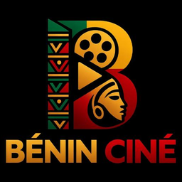

Le projet
Le Netflix
béninois.
Une maison de production et de diffusion née d'un constat simple : nos films et nos séries d'hier, celles de Matao, d'Anansou, de Sœur Ruth, de la compagnie Sèmako Wobaho qui racontaient nos vies, faisaient rire et réfléchir, et ont aidé toute une jeunesse à se construire. Aujourd'hui, ils ne sont presque plus visibles.
Bénin Ciné veut redonner vie à cet esprit : remettre le cinéma béninois au centre du quotidien, produire des œuvres qui parlent à la nouvelle génération et honorer l'héritage du passé.

Bénin Ciné
Maison de production & de diffusion
Cotonou, République du Bénin
Déposer un projet Soutenir la plateforme
Vision
Devenir la référence de l'audiovisuel béninois
Un véritable « Netflix béninois » qui produit, co-produit et diffuse des films et séries de haute qualité, ancrés dans notre culture et notre réalité, aux standards modernes de l'image, du son et de l'écriture.
Mission
Produire, révéler, diffuser
- · Des contenus authentiques, divertissants et porteurs de valeurs pour la jeunesse.
- · Une plateforme professionnelle pour les talents béninois.
- · Le rayonnement du cinéma béninois : national, régional, international.
- · Une alternative locale crédible face à la domination culturelle étrangère.
Positionnement
Trois métiers, une maison
- · Maison de production de films et séries premium.
- · Plateforme de diffusion dédiée au contenu béninois et africain.
- · Incubateur de talents ouvert aux projets externes en co-production.
Nos valeurs
Ce qui ne se négocie pas
Authenticité & diversité
La diversité béninoise comme matière première : nos langues, nos villes, nos villages, nos contradictions.
Qualité cinématographique
Image, son et scénario travaillés au niveau des standards internationaux, sans renoncer à notre voix.
Innovation narrative
Le mélange assumé de tradition et de modernité : nos récits anciens dans des formes contemporaines.
Inclusion
Accompagner les jeunes talents, ouvrir les métiers techniques, former sur chaque production.
Professionnalisme
Contrats clairs, respect des droits d'auteur, rémunération équitable de chaque ayant droit.
Activités
Cinq piliers
Développement et production de projets originaux : films, web-séries, documentaires.
Accompagnement de projets externes : apport financier, moyens techniques, encadrement.
Salles de cinéma, festivals, télévision, VOD et réseaux sociaux.
Avant-premières, masterclass, projections populaires en plein air.
Renforcement des capacités des acteurs du secteur : écriture, image, son, production.
Premier projet phare
La série du lancement
Une série de 12 épisodes de 30 à 45 minutes, centrée sur la jeunesse béninoise contemporaine. Elle sert de vitrine au lancement officiel de Bénin Ciné : une démonstration de ce que nous savons faire, diffusée sur la plateforme, en salles et dans les festivals.
Rejoindre l'aventureModèle économique
- · Vente de droits de diffusion (télévisions nationales et internationales).
- · Partenariats et sponsoring d'entreprises béninoises, régionales et internationales.
- · Revenus des abonnements VOD et des locations à la séance.
- · Protection et monétisation des catalogues (copyrights).
- · Visibilité et revenus via festivals et événements.
Équipe
L'équipe minimale pour démarrer
Une équipe resserrée, complétée projet par projet, notamment pour les tournages.
Nous écrire
Parlons de votre projet
Projets, partenariats, diffusion, formation, salles : une seule adresse, une équipe qui répond.